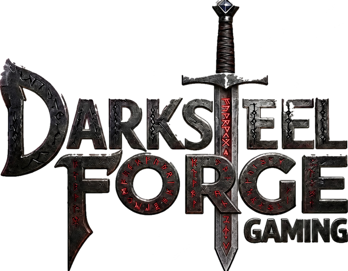

Inventory catalogued
Every single photographed, graded and priced against live market data across Magic, Pokemon, One Piece and Riftbound.
Done
Forge your game night
We are building the shop. Singles, sealed and the chase cards that decide the table - hand-checked and priced to market the day they land.
The stock
A slice of the opening inventory. Singles across all four games, priced to market the day they land.
The build
Where we are, and what happens next. The line fills as each stage is finished.
Every single photographed, graded and priced against live market data across Magic, Pokemon, One Piece and Riftbound.
DoneThe storefront, the display case and the search that lets you find a card in seconds. This is what you are waiting on.
In progressBrowse the full library, buy singles and sealed, and sell us your collection through the buylist desk.
NextA counter, glass cases, play space and weekly events. The list hears the address and the date first.
Soon